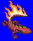
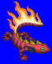
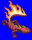
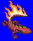

Height: About 10 cm. Weight: ???
Habitat: Volcano Origin: Europe
Meaning: Latin "salamander"
A small dragon-shaped creature that mainly lives in volcanoes and areas where flame is prevalent. It sustains itself with flame and does not require solid food. Its skin does not burn under any conditions. In medieval times, asbestos cloth was sold as the skin of the salamander. In medieval alchemical practices, it was thought that using the skin of the salamander, one could change lead into gold.
See also: Sylph